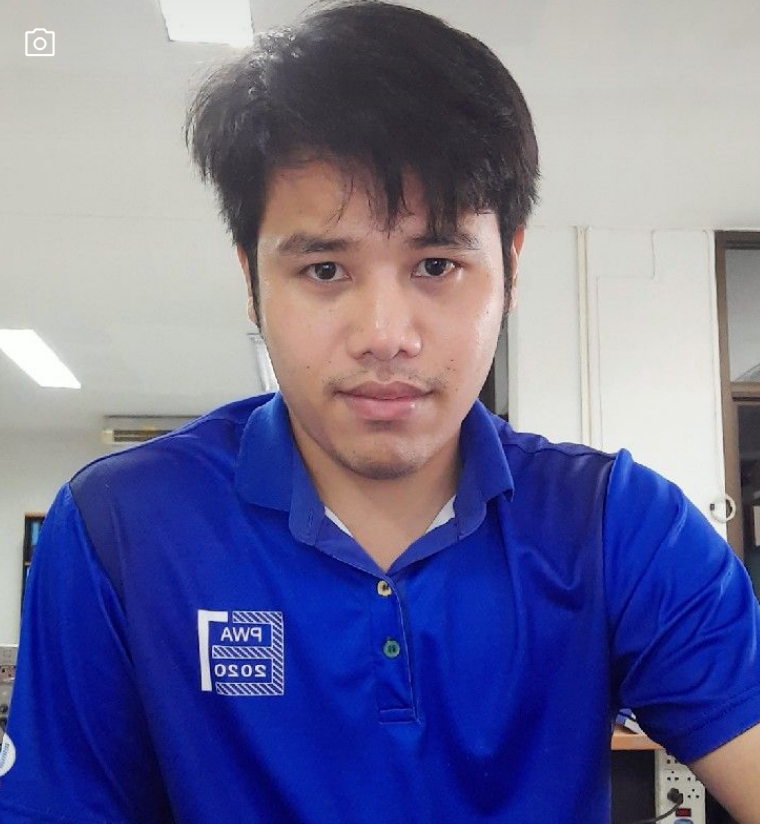

Patipol Gunhomepoo Portforio

I'am Civil Engineer (Class 6)
Provincial Waterwork Authority(Thailand) Region 8 - Distribution System Division
1) Summary
As a dedicated Civil Engineer with 6 years of experience at the Provincial Waterworks Authority (PWA) Region 8, I have specialized in water distribution systems, focusing on the design, operation, and maintenance of water networks. I am committed to ensuring efficient water supply services and implementing solutions for non-revenue water (NRW) reduction. With strong project management skills and a background in Pipe Network Analysis, and Leak Detection, I aim to contribute to the sustainable development of water infrastructure.
2) Education
- Bachelor of Engineering, Civil Engineering - Kasetsart University(2557)
- Bachelor of Science, Applied Computer Science - Sukhothai Thammathirat University(2568)
3) Work Experience
Civil Engineer
- Provincial Waterworks Authority Region 8 – Distribution System Division (October 21, 2562 – Present)
- Nantawan Co.,Ltd (Thai Obayashi) – Langsuan Village Project (October , 2560 – September, 2562)
- Ch.Sahasekaitech Co.,Ltd – Design and Estimate Division (April , 2557 – September, 2560)
Responsibilities:
- Managed and maintained the water distribution network across multiple service areas within Region 8, ensuring consistent water supply to both urban and rural areas.
- Conducted comprehensive surveys and assessments of existing pipe networks, identifying weak points and areas requiring maintenance or upgrades.
- Lead projects to reduce Non-Revenue water (NRW) by implementing advanced leak detection technologies and monitoring systems.
- Collaborated with cross-functional teams to develop and implement plans for water system expansions, ensuring future demand can be met sustainably.
- Developed detailed designs for pipeline installations and repairs, focusing on minimizing service disruption while maintaining high-quality standards.
- Prepared technical reports, cost estimates, and project timelines for water infrastructure improvement projects.
- Coordinated with contractors, suppliers, and government agencies to ensure projects adhered to safety regulations, timelines, and budget constraints.
- Provided on-site supervision during pipeline installation and repair operations, ensuring compliance with engineering specifications and quality standards.
4) Skill
- Water Distribution Network Design & Management: Proficient in designing, managing, and maintaining water distribution systems, with a focus on efficiency and sustainability.
- Non-Revenue Water (NRW) Reduction: Expertise in leak detection, water auditing, and the implementation of NRW reduction strategies.
- Pipe Network Analysis: Skilled in assessing pipeline conditions, analyzing flow, pressure, and identifying failure points.
- Project Management: Strong ability to oversee multiple projects simultaneously, ensuring timely delivery and adherence to safety standards.
- GIS & Mapping: Experienced in using GIS tools for mapping distribution networks and tracking water system performance.
- Surveying & Site Inspection: Proficient in conducting site surveys, collecting data, and ensuring accuracy in engineering designs.
- Technical Report Writing: Capable of preparing detailed engineering reports, proposals, and documentation for project stakeholders.
- Collaboration & Leadership: Strong team player with the ability to lead teams, coordinate with different departments, and manage contractors effectively.
- Regulatory Compliance: In-depth understanding of civil engineering standards, safety protocols, and local government regulations for water systems.
4) Awards, Certifications, and Achievements
- Certified Civil Engineer (Professional Engineer License) – [Issuing Body], [Year]
- Water Distribution System Specialist Certification – [Issuing Body], [Year]
- Best Civil Engineering Project – Provincial Waterworks Authority (National Award), [Year]
Recognized for leading a successful water pipeline upgrade project that minimized disruptions and improved water access for rural areas.
- Efficiency Improvement Award – Provincial Waterworks Authority Region 8, [Year]
Recognized for innovative approaches in improving the operational efficiency of water distribution systems.
5) Other